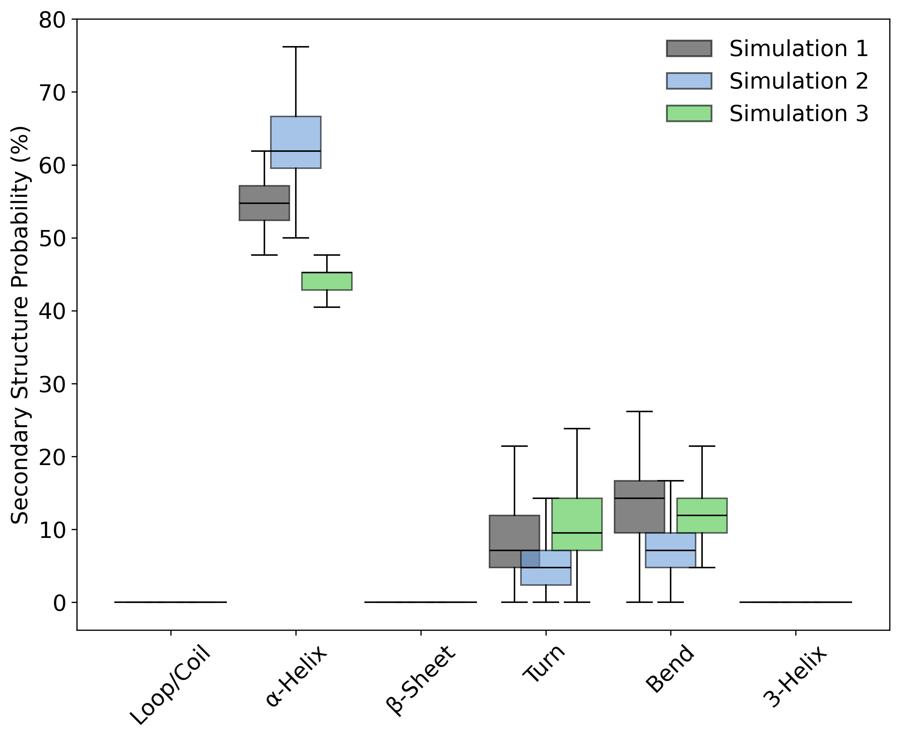

Secondary Structure Probability
Overview
DynamiSpectra provides a comprehensive secondary structure analysis tool for molecular dynamics simulations based on .dat files. This module calculates the frame-wise probability of each structural state—such as α-helices, β-sheets, loops, turns, bends, and 3-helices—across simulation replicas. The results are visualized using boxplots, allowing for comparative analysis of secondary structure stability and population among different simulation groups.
def ss_analysis(output_folder, *simulation_files_groups, plot_config=None)

Interpretation guidence: This graph shows the probability distribution of each secondary structure type across the simulation. Variations in these probabilities can reflect structural stability or conformational changes over time. Consistent probabilities suggest stable elements, while shifts may indicate unfolding or rearrangements.
Complete code
import numpy as np
import matplotlib.pyplot as plt
from matplotlib.patches import Patch
import os
# Mapping DSSP secondary structure codes to numeric labels
state_mapping = {
'H': 1, # Alpha helix
'E': 2, # Beta sheet
'C': 0, # Coil / Loop
'T': 3, # Turn
'S': 4, # Bend
'G': 5, # 3-Helix
'~': -1, # Unknown / missing data
'B': -1, # Isolated beta-bridge (treated as unknown)
}
# Human-readable state names for plotting
state_names = {
0: 'Loop/Coil',
1: 'α-Helix',
2: 'β-Sheet',
3: 'Turn',
4: 'Bend',
5: '3-Helix',
}
def read_ss(file):
"""
Reads secondary structure assignments from a .dat file.
Parameters:
file (str): Path to the secondary structure .dat file.
Returns:
np.ndarray: 2D array with shape (frames x residues), numeric states.
"""
try:
print(f"Reading file: {file}")
ss_data = []
with open(file, 'r') as f:
for line in f:
# Skip comment/header lines or empty lines
if line.startswith(('#', '@', ';')) or line.strip() == '':
continue
# Map each character in line to numeric state, default -1 for unknown
ss_line = [state_mapping.get(char, -1) for char in line.strip()]
ss_data.append(ss_line)
if len(ss_data) == 0:
raise ValueError(f"No valid data found in {file}")
return np.array(ss_data)
except Exception as e:
print(f"Error reading {file}: {e}")
return None
def calculate_probabilities(ss_data):
"""
Calculate the per-frame probability of each secondary structure state.
Parameters:
ss_data (np.ndarray): 2D array of secondary structure states (frames x residues).
Returns:
dict: Keys are state names, values are 1D arrays of per-frame probabilities.
"""
probabilities = {name: [] for name in state_names.values()}
for code, name in state_names.items():
# Calculate fraction of residues in each state per frame
probabilities[name] = np.sum(ss_data == code, axis=1) / ss_data.shape[1]
return probabilities
def plot_ss_boxplot(probabilities_list, labels, colors, output_folder,
alpha=0.7, axis_label_size=12, y_axis_label='Probability (%)', figsize=(7, 6)):
"""
Generate a boxplot comparing secondary structure probabilities across simulations.
Parameters:
probabilities_list (list of dicts): List of probability dicts from each simulation group.
labels (list of str): Labels for each simulation group.
colors (list of str): Colors for each simulation group.
output_folder (str): Directory to save plots.
alpha (float): Transparency for boxplot fill colors.
axis_label_size (int): Font size for axis labels.
y_axis_label (str): Label for Y axis.
figsize (tuple): Figure size (width, height).
"""
x_labels = list(state_names.values())
x = np.arange(len(x_labels))
plt.figure(figsize=figsize)
def plot_boxplot(data, positions, color):
"""
Helper to plot one set of boxplots with given positions and color.
"""
box = plt.boxplot(data, positions=positions, widths=0.4, patch_artist=True,
labels=[''] * len(positions), showfliers=False)
for patch in box['boxes']:
patch.set_facecolor(color)
patch.set_alpha(alpha)
for median in box['medians']:
median.set_color('black')
return box
# Plot boxplots for each simulation group side-by-side
for i, (probs, label, color) in enumerate(zip(probabilities_list, labels, colors)):
data = [probs[name] * 100 for name in x_labels] # Convert fraction to percentage
plot_boxplot(data, x - 0.25 + i * 0.25, color)
plt.xlabel('', fontsize=axis_label_size)
plt.ylabel(y_axis_label, fontsize=axis_label_size)
plt.title('', fontsize=14, fontweight='bold')
plt.xticks(x, x_labels, rotation=45, fontsize=axis_label_size)
plt.yticks(fontsize=axis_label_size)
plt.grid(False)
# Create legend patches for simulation groups
legend_elements = [
Patch(facecolor=color, edgecolor='black', linewidth=1.2, alpha=alpha, label=label)
for label, color in zip(labels, colors)
]
plt.legend(handles=legend_elements, frameon=False, fontsize=axis_label_size, loc='upper right')
plt.tight_layout()
os.makedirs(output_folder, exist_ok=True)
plt.savefig(os.path.join(output_folder, 'secondary_structure_boxplot.png'), dpi=300, bbox_inches='tight')
plt.savefig(os.path.join(output_folder, 'secondary_structure_boxplot.tiff'), dpi=300, bbox_inches='tight')
plt.show()
def ss_analysis(output_folder, *simulation_files_groups, plot_config=None):
"""
Main function to perform secondary structure analysis.
Parameters:
output_folder (str): Directory to save generated plots.
*simulation_files_groups: Variable number of groups of replicate file paths (lists of str).
plot_config (dict, optional): Configuration for plotting, supports:
- labels (list of str): Names of simulation groups.
- colors (list of str): Colors for groups.
- alpha (float): Transparency for boxplots.
- axis_label_size (int): Font size for axis labels.
- y_axis_label (str): Label for Y axis.
- figsize (tuple): Figure size (width, height).
"""
if plot_config is None:
plot_config = {}
num_groups = len(simulation_files_groups)
labels = plot_config.get('labels', [f'Simulation {i+1}' for i in range(num_groups)])
colors = plot_config.get('colors', ['#333333', '#6A9EDA', '#54b36a'][:num_groups])
alpha = plot_config.get('alpha', 0.7)
axis_label_size = plot_config.get('axis_label_size', 12)
y_axis_label = plot_config.get('y_axis_label', 'Probability (%)')
figsize = plot_config.get('figsize', (7, 6))
def process_group(file_paths):
"""
Read and aggregate secondary structure data from replicate files in one simulation group.
Parameters:
file_paths (list of str): Paths to replicate .dat files.
Returns:
np.ndarray: Secondary structure data array (frames x residues) from the first replicate.
(Assuming replicates have the same data format.)
"""
ss_data = []
for file in file_paths:
data = read_ss(file)
if data is not None:
ss_data.append(data)
# For simplicity, use the first replicate data (assuming replicates have the same data)
return ss_data[0] if ss_data else None
probabilities_list = []
for group in simulation_files_groups:
if group:
ss_data = process_group(group)
if ss_data is not None:
probabilities = calculate_probabilities(ss_data)
probabilities_list.append(probabilities)
plot_ss_boxplot(probabilities_list, labels, colors, output_folder,
alpha=alpha, axis_label_size=axis_label_size,
y_axis_label=y_axis_label, figsize=figsize)